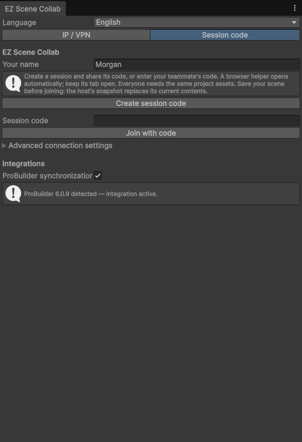
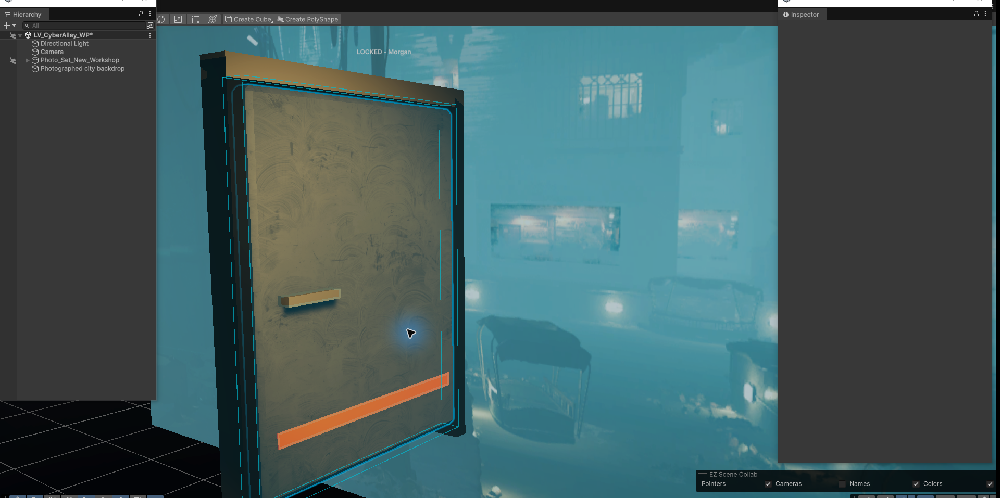
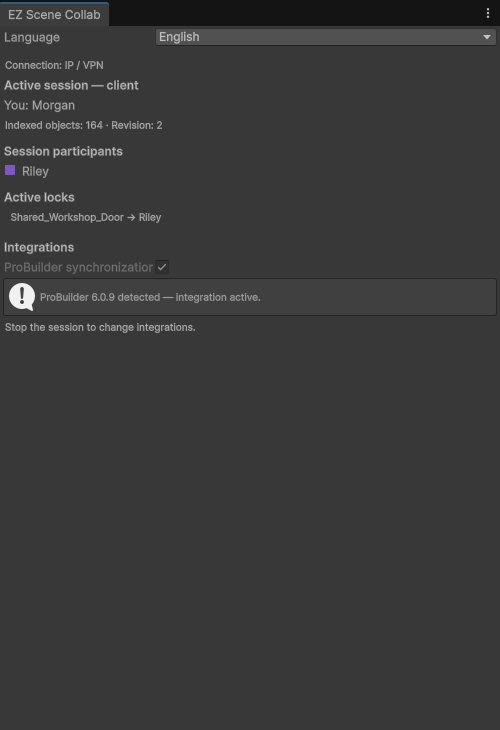

Connect your Unity Editors with a session code or over IP/VPN. See your teammates’ supported scene changes as you work, and use object ownership to keep edits coordinated. No Play Mode required.
Environment: Cyberpunk City / CyberAlley, HIVEMIND. Collaboration tool: Explosivo 30.
From your project to a shared session.
1
Open the same project
Open Window > EZ Scene Collab. Everyone needs the same project revision and active scene, matching Unity and EZ Scene Collab versions, assets, scripts and packages. Share asset files separately through your usual version-control workflow.
2
Host and invite your teammates
One Editor starts the session. Teammates join with a session code or the host’s reachable IP address and port. Save and back up your scene before joining, then wait for the initial synchronization to finish.
3
Select an object and edit
Select an available object to request ownership. Teammates see who owns it while supported changes synchronize. Deselect the object to release it so another participant can edit it. The host keeps the session open.
Two ways to connect.
Choose the connection that suits your team. Scene synchronization and optional ProBuilder support work in both modes.
Session code
The host selects Create session code in Unity and shares the code privately. Guests paste the full code and select Join with code.
A browser helper opens automatically on each computer.
Keep that tab open throughout the session.
No Node installation or manually started server is needed.
Uses PeerJS/WebRTC. Some restricted networks require a separately configured TURN relay; that service is not included.
IP / VPN
Start the host and connect with its reachable address and matching port. The default TCP port is 9876.
Use a trusted LAN or private VPN, such as Tailscale or Hamachi.
This mode does not need the browser helper.
Direct TCP adds no authentication or encryption; use trusted collaborators and networks.
Choose the mode inside Unity.
The connection panel offers both IP / VPN and Session code. Your project stays open in the Unity Editor while the helper handles code-mode connectivity.
Neither mode transfers project asset files. Models, textures, scripts and prefab assets must already match on every computer.

See who is editing what.
A remote lock identifies an object owned by another participant. You can continue working on other available objects in the scene.

Native object ownership indicator in the Scene View.

Session participants and active locks in Unity.
Scene objects
Supported transforms, names, active state, hierarchy changes, creation and deletion. Prefab instances use the matching local assets.
Inspector changes
Supported serialized properties, materials and scene-object references, with the same scripts and assets installed in every project.
Ownership and recovery
Visible ownership coordinates edits. Revision history recovers supported changes after a temporary disconnect, with a fresh host snapshot when needed.
Optional ProBuilder
Synchronize supported ProBuilder edits when a compatible package is installed. The core tool also works without ProBuilder.
Before you connect.
Tested configurationStatus
Windows · Unity 6000.0.58f2Tested
Optional ProBuilder 6.0.9Tested
Core without ProBuilder / NewtonsoftTested
macOS, Linux, other Unity releasesNot verified
Get EZ Scene Collab 1.2.0.
The Full Edition is available from the official Explosivo 30 itch.io page.